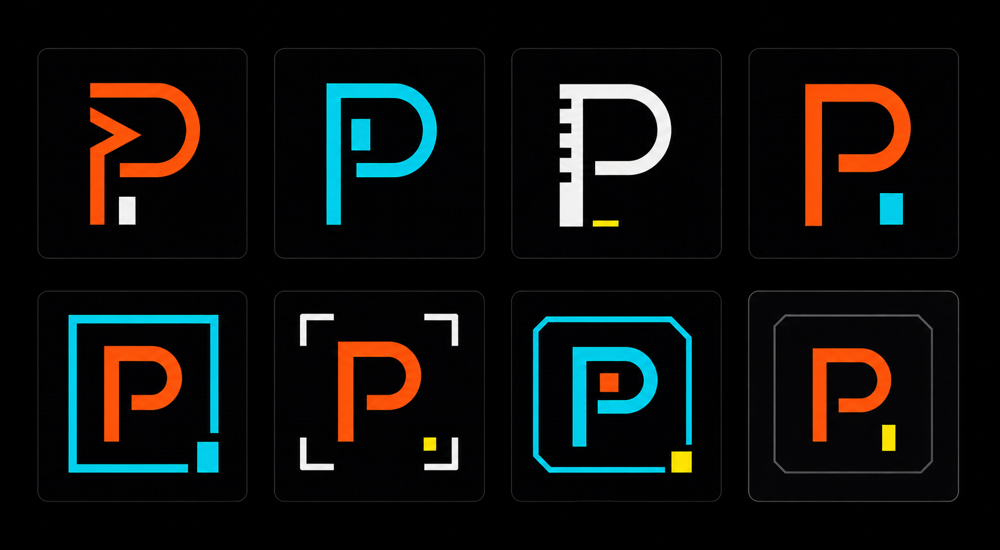

PantherIQ logo proposal · CLI security route
P Prompt / Secure Cell
Focused refinement of the simple P-square direction: cybersecurity and AI expressed as a terminal command cell, using loud orange, cyber blue, and alert yellow.
